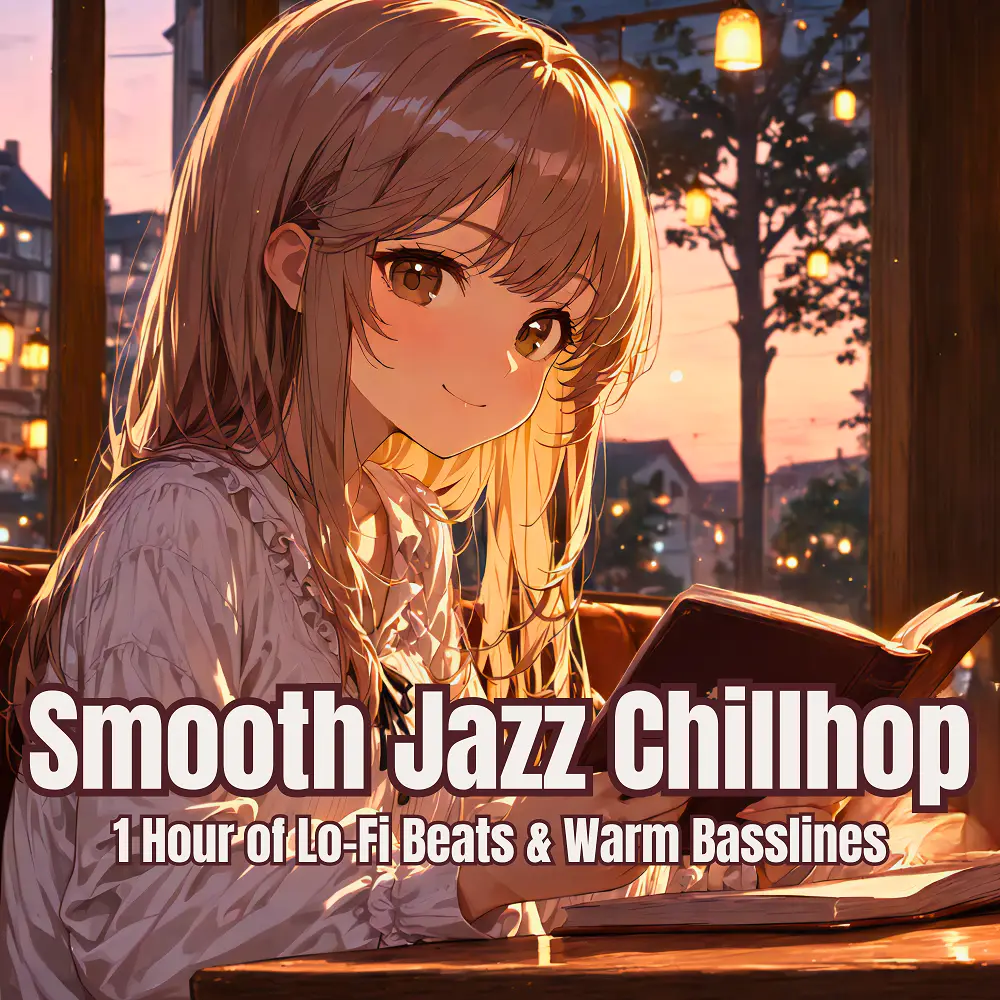

Jazz · Chillhop
Smooth Jazz Chillhop
Nanashino-chan
Explore Smooth Jazz Chillhop by Nanashino-chan: 25 instrumental tracks spanning Jazz / Chillhop. Start with Morning Breeze / Warm Groove, preview the collection and find your favorites on streaming services.
2025-06-06 · Released · 25 tracks · Instrumental
Preview the album
The jacket stays here until you choose a track. Playback uses YouTube.
YOUTUBE PREVIEW
Choose a track to listen
The jacket stays here until you choose a track. Playback uses YouTube.
If playback is unavailable, open the album or track on the streaming service.
Find this album on streaming services
Links marked “search” open search results. Select the album or track on the service.
Track list 25
- 01Morning Breeze
- 02Warm Groove
- 03Velvet Chords
- 04Gentle Jazz Vibes
- 05Smooth Flow
- 06Soulful Reflections
- 07Soft Beats
- 08Cozy Harmony
- 09Mellow Basslines
- 10Sunset Jazz
- 11Golden Hour Chill
- 12Quiet Evening
- 13Nightfall Melody
- 14Relaxing Waves
- 15Warm Sunset
- 16Midnight Smooth
- 17Deep Echoes
- 18Late Night Vibes
- 19Cool Breeze
- 20Jazzed Up
- 21Chill Groove
- 22Dreamy Bass
- 23.Slow Motion
- 24Soulful Serenade
- 25Final Rest
Find a sound for your next post
Copy “Nanashino-chan + track title” and paste it into your social app’s music search. Availability depends on your region and account. Copying the name does not grant usage rights.